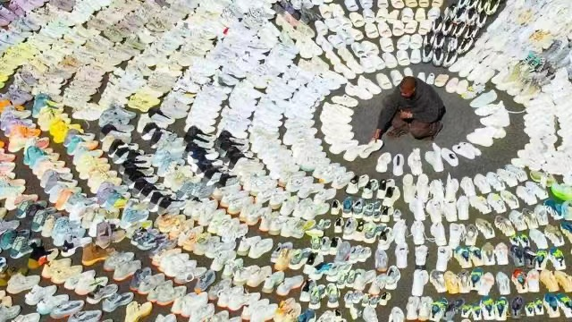

ye的商业帝国
2004年，在环球唱片旗下的Def Jam唱片公司旗下创立自己的音乐厂牌GOOD Music 。 2008年8月，坎耶·维斯特公布了他开设“Fatburger”餐馆的计划，同时宣布以“KW Foods LLC”公司的名义在芝加哥地区开设10家“Fatburger”餐馆 。2009年，与耐克合作推出Air Yeezy系列运动鞋 ；同年，联手奢侈品牌路易威登推出Sneakers运动鞋 ；此外，他还推出了个人服装品牌“Pastelle”，他自己也参与了许多服装的设计 。 2012年，成立艺术创意公司Donda 。2013年，带着Air Yeezy系列运动鞋转投阿迪达斯 。2015年，和Jay-Z一起投资音乐流服务公司Tidal 。 2018年，宣布担任成人网站Pornhub的创意总监 。2019年，Yeezy的销售额超过十亿美元 ；10月，以1.5亿美元的收入在2019福布斯100名人榜排名第3位 。 2021年，联手Kano Computing推出自定义音乐播放机Stem Player 。2022年，坎耶以20亿美元财富位列《2022年福布斯全球亿万富豪榜》第1513位 ；10月25日，阿迪达斯宣布将终止与坎耶的合作 ；福布斯估算，与阿迪达斯终止合作将导致坎耶净值损失15亿美元，仅剩4亿美元 。 2023年3月23日，胡润研究院发布《2023胡润全球富豪榜》，其以95亿人民币财富位列榜单第2321位 。
